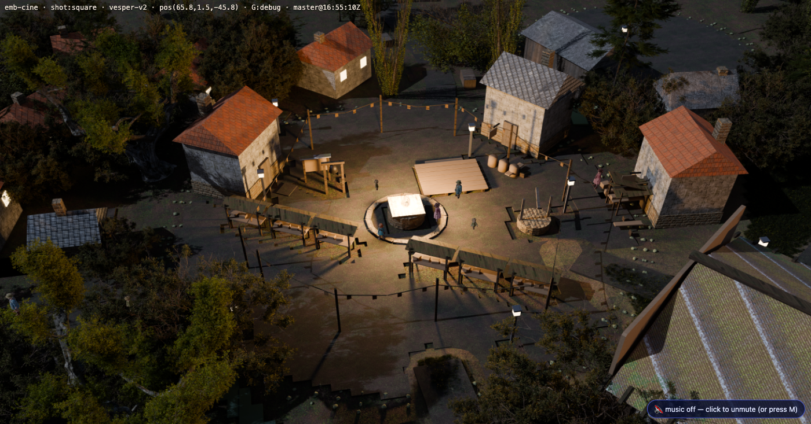
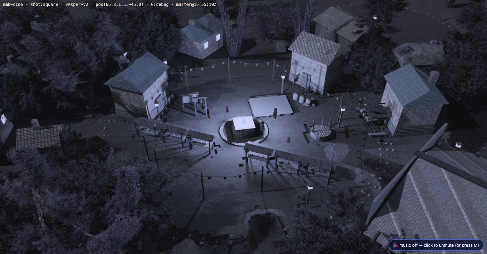
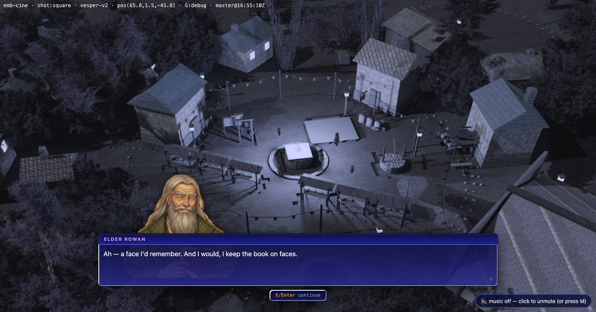
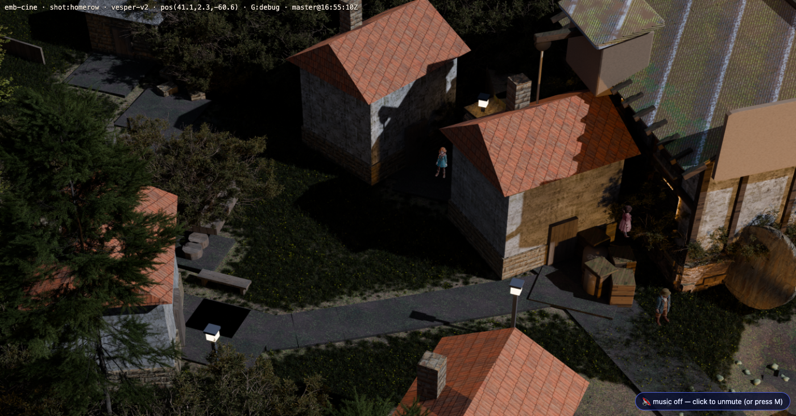
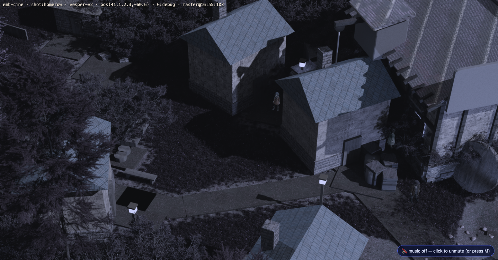
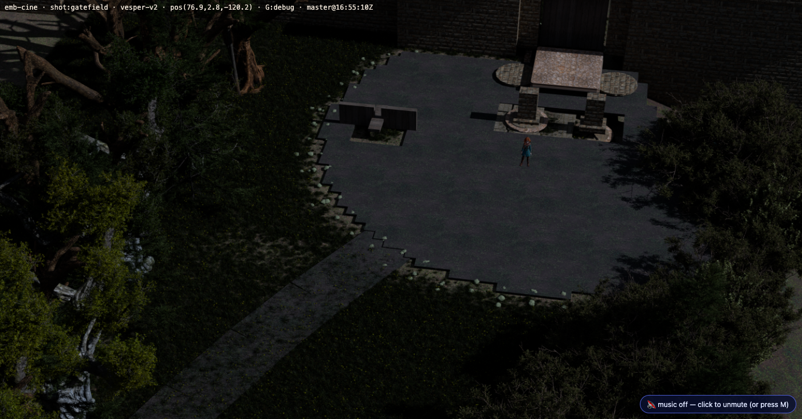
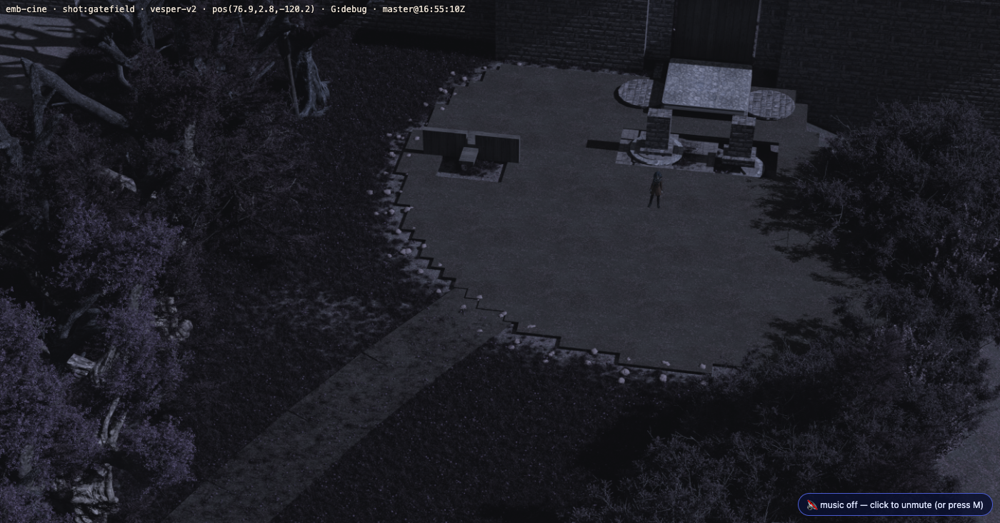
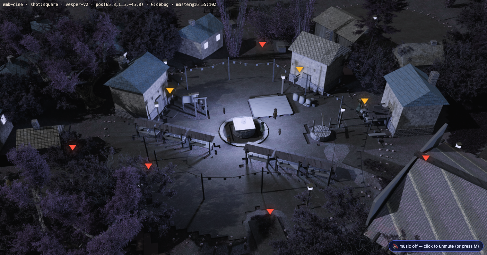
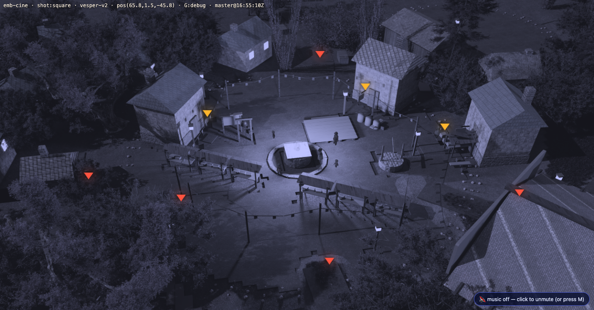

The Hush
Emberbrook loses its heart — story.ch1.hush · captured 2026-08-03 ·
node tools/hush_shot.mjs --port 3000 --cams square,homerow,gatefield --cutin rowan.hail
The user chose “take the light” over a grayscale wash, and the reason is canon rather than taste: Emberbrook IS the Heartlight town. Draining the colour out of the frame says something is wrong with the television. Taking the warm sources out and leaving cold ambient says the fire is gone, which is the thing that actually happened.
<img> that dialogue.js paints
over that canvas, so the filter cannot reach it: the town goes blue and flat and
the people stay warm and fully coloured. If a later change moves the grade to a parent
element or into a post pass that composites the UI, this breaks silently —
Hush.debug().cutinsWarm reports which element wears the filter.Festival Square — the cut the beat runs on



Home Row — the clearest read


The Old Gate — the hard case, and what it forced


brightness(0.80) is right where there is light to take — the square and Home Row are
full of lamp pools and losing a fifth of them is what sells it. The Old Gate plate is outside the
village and charLight had already measured its 70th-percentile luminance at 0.115 against
the square's 0.21 (window.__charlight.plate.p70, the number the character rig
uses to set its own level). Taking another fifth off that plate did not read as a hush, it read as
a dark frame — and this repo already has the rule: visible is not readable. The cut now
scales with what the plate actually has, floored at 0.35, so a dark plate keeps its floor.What was tried and rejected
Four grades at the square, judged by eye:


The honest limit
tools/cine_bake.py;
no runtime light can turn them off. The only alternative is a second full Blender bake of every
Emberbrook camera — hours, plus a second art set to keep in sync for ever. So the pools survive as
pale cold pools. On the square and Home Row that reads to me as the light has no warmth left
in it, which is the intent. It is a judgement, so the pairs are here for a human to overrule.Force it live for yourself: play3d.html?scene=emb-cine&hush=1 (and
&hush=0 to hold it off). In play it is driven by the flag alone, Emberbrook only.